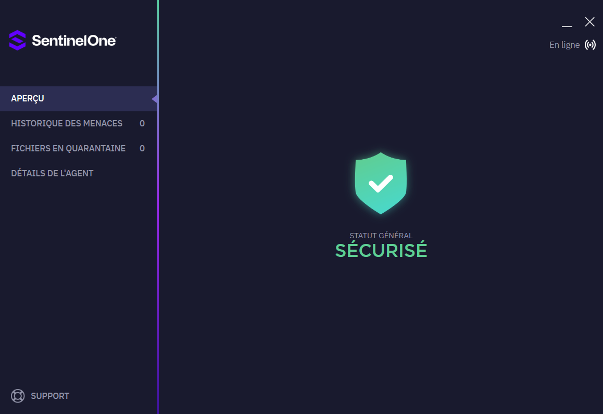
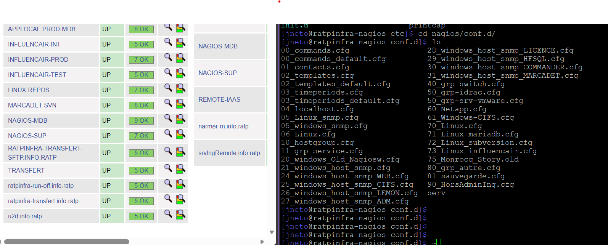

🖥️ Administration Système - Ticketing
Gestion quotidienne de l'outil de ticketing OS Ticket/Optick, afin de répondre aux incidents et aux demandes d’assistance et d’évolution : création de boîte de groupe, gestion des groupes de sécurité et des droits sur les serveurs de fichiers, et sur les applications.
- Utilisation de LAPS pour la sécurité des mots de passe administrateurs temporaires sur les postes de travail.
- Utilisation de "Demande de droits"(outil mis en place par un collègue) permettant de gérer les accès aux ressources informatiques.
 📄 Voir l'outil de ticketing
📄 Voir l'outil de ticketing
📊 Gestion de parc
J'ai réalisé un Mail Publipostage avec des conditions, envoyé à toute les personnes qui après filtrage remplissait les critères, afin d'avoir une gestion maxiamale du parc informatique de l'entreprise, c'est à dire : Tout équipement financé sert, et est en état de marche.
- Cette activité m'a permis de maîtriser les outils de gestion de parc ( Utilisation du Back office Digital'k qui remonte tout les équipement, extrait ensuite en Exel afin d'effectuer le filtrage) et de communication (Mail publipostage)
- Je réalise cette mission sur un rythme semestriel afin d'en assurer la continuité et l'efficacité.
📂 Dossiers de Qualifications logciels
Création et gestion des dossiers de qualification pour les logiciels utilisés au sein de l'entreprise.
- Tests des installations des logiciels sur un poste matricé.
- En cas de retour positif, on autorise l'application à être déployée et installée sans besoin de configuration pour un groupe de personne prédéfinis selon les besoins.
- Facilite l'accès aux logiciels métiers des utilisateurs.

🔄 Migration outil de supervision
J'ai éffectué la migration de nos machines (physiques et virtuelles) qui était anciennement sur PRTG (outil de supervision payant) vers un nouvel outil de supervision Nagios.
- Certaines de nos machines étaient déjà écouté par Nagios, j'ai donc simplement du basculer le reste de l'infrastructure avec les mêmes sondes que les machines renseignées.
- Nagios car Gratuit et open-source malgrés sont interface Rustique et ça configuration plus complexe
 📄 Nouvel Outil de Supervision
📄 Nouvel Outil de Supervision
📦 Mise en place de PCs de supervision (Voie)
Mise en place d'un PC et d'un écran (type télé) de supervision dans plusieurs sites d'une même unité
- Projet Galaxie -> Permet aux agents de suivre les dépèches de la voie en temps réel
- Configuration des Pcs (Autologon, arrêt de veille, configuration du client Web)
 📄 Ecran de supervision
📄 Ecran de supervision
📍Déplacement sur différents sites
Sortis sur différents sites RATP de jour comme de nuit.
- Accompagnements SI/ Support SI de jour sites : Denfert, Villette, Nanterre, Champs Elysées Clemenceau, Bourdon, LEM Marne la Valée.
- Accompagnement des utilisateurs de NUIT pour ne pas les laisser tomber dans leurs problèmes concernant le SI.
🛡️ Monter de versions Antivirus
Monter de versions de l'antivirus "SentinelOne", de nos machines projet (non-utilisateurs)
- Installations du Nouvel Agent antivirus automatiquement via l'interface d'administration web de l'antivirus SentinelOne
- Installations manuel sur les machines windows 8 car mauvaises optimisation pour la machine via l'instalation en ligne.

📄 Capture d'écran📡Configuration du superviseur Nagios
Configuration et gestion du superviseur Nagios pour la surveillance des hôtes et services
- Configuration des notifications et des seuils d'alerte
- Intégration de l'API de notre outil de ticketing dans un script afin de faire remonter les notifications de Nagios jusqu'à la création d'un ticket.

📄 Capture d'écran